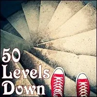
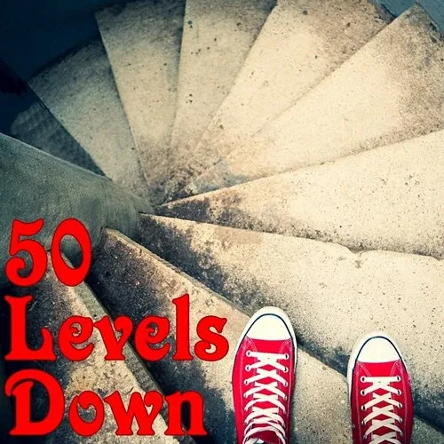
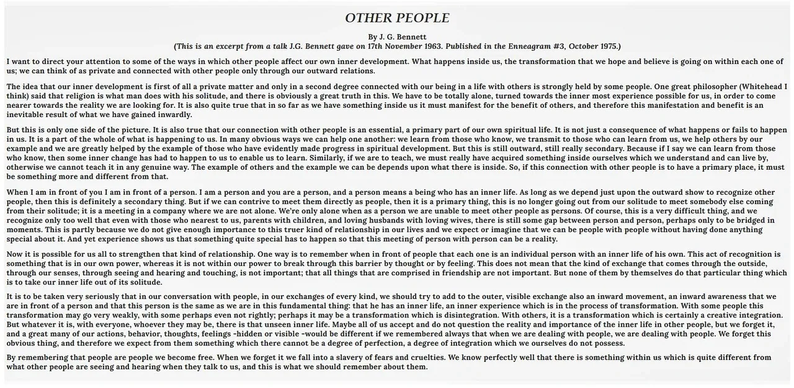
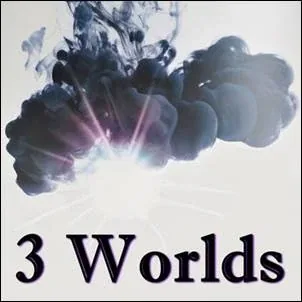
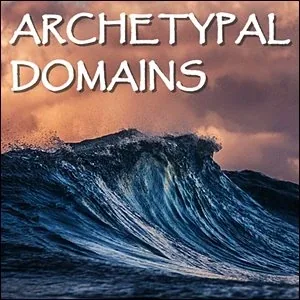

50 Levels Down
- …
50 Levels Down
- …

- # A Heroic Journey- You have greater depth than you perhaps have experienced. It helps you discover your treasures when the consciousness of another person journeys with you on your inner explorations. For this reason we offer you - 50 Levels Down, a Possibility Management awareness-expansion and- 3 Phase Healingprocess. - 50 Levels Down - The Theory - "Diggin' through the mud to get to the skies..." - 50 Levels Down - The Process - "Something quite special has to happen so that this meeting of a person with a person can be a reality... an inward awareness that we are in front of a person that is the same as we are in this fundamental thing: that they have an inner life, an inner experience which is in the process of transformation... It is this particular thing which takes our inner life out of its solitude." - Courtesy of - J. G. Bennett Foundation
- Preparation Experiments- #### Consciously Experimenting builds the kind of Matrix to prepare you to journey- 50 Levels Down.
- ### Title Text- Matrix Code - 50LEVELS.00- After completing this Experiment, please register Matrix Code 50LEVELS.00 in your free account at StartOver.xyz. This experiment is worth X Matrix Points. - ### Title Text- Matrix Code - 50LEVELS.00- After completing this Experiment, please register Matrix Code 50LEVELS.00 in your free account at StartOver.xyz. This experiment is worth X Matrix Points.
- ### Title Text- Matrix Code - 50LEVELS.00- After completing this Experiment, please register Matrix Code 50LEVELS.00 in your free account at StartOver.xyz. This experiment is worth X Matrix Points.  - ### Title Text- Matrix Code - 50LEVELS.00- After completing this Experiment, please register Matrix Code 50LEVELS.00 in your free account at StartOver.xyz. This experiment is worth X Matrix Points.
- ### Title Text- Matrix Code - 50LEVELS.00- After completing this Experiment, please register Matrix Code 50LEVELS.00 in your free account at StartOver.xyz. This experiment is worth X Matrix Points.  - ### Title Text- Matrix Code - 50LEVELS.00- After completing this Experiment, please register Matrix Code 50LEVELS.00 in your free account at StartOver.xyz. This experiment is worth X Matrix Points.
- ### Title Text- Matrix Code - 50LEVELS.00- After completing this Experiment, please register Matrix Code 50LEVELS.00 in your free account at StartOver.xyz. This experiment is worth X Matrix Points.  - ### Title Text- Matrix Code - 50LEVELS.00- After completing this Experiment, please register Matrix Code 50LEVELS.00 in your free account at StartOver.xyz. This experiment is worth X Matrix Points.
- ### Title Text- Matrix Code - 50LEVELS.00- After completing this Experiment, please register Matrix Code 50LEVELS.00 in your free account at StartOver.xyz. This experiment is worth X Matrix Points. 
- ### Title Text- Matrix Code - 50LEVELS.00- After completing this Experiment, please register Matrix Code 50LEVELS.00 in your free account at StartOver.xyz. This experiment is worth X Matrix Points. - NOTE:This website is a- Bubble in the Bubble Mapof the free-to-play massively-multiplayeronline-and-offline thoughtware-upgrade matrix-building personal-transformation real-life adventure-game called- StartOver.xyz. It is a- doorwayto- experimentsthat- upgrade your thoughtwareso you can relocate your- point of originand- createmore- possibility. Your- nowledgeis what youthink about. Your- thoughtwareis what you useto think with. When you- change your thoughtware,you go through a- liquid stateas your mind- reorganizesitself. Liquid states can bring uptransformational- feelingsand- emotions. By- upgrading your thoughtwareyou- build matrixto hold more- consciousness (archived — not captured)and leave behind a- low dramalife of- reactivity. No one can upgrade yourthoughtware for you. More interestingly, no one can stop you from upgrading your thoughtware. Our theory is that when we- collectively build1,000,000 new Matrix Points wewill change the morphogenetic field of the human race for the better. Please choose- responsiblyto read this website. Reading thiswhole website is worth 1 Matrix Point. Doing any of the experiments earns you additional Matrix Points. Please use Matrix Code- 50LEVELS.00to log yourMatrix Point for reading this website on- StartOver.xyz. Thank you for playing full out!